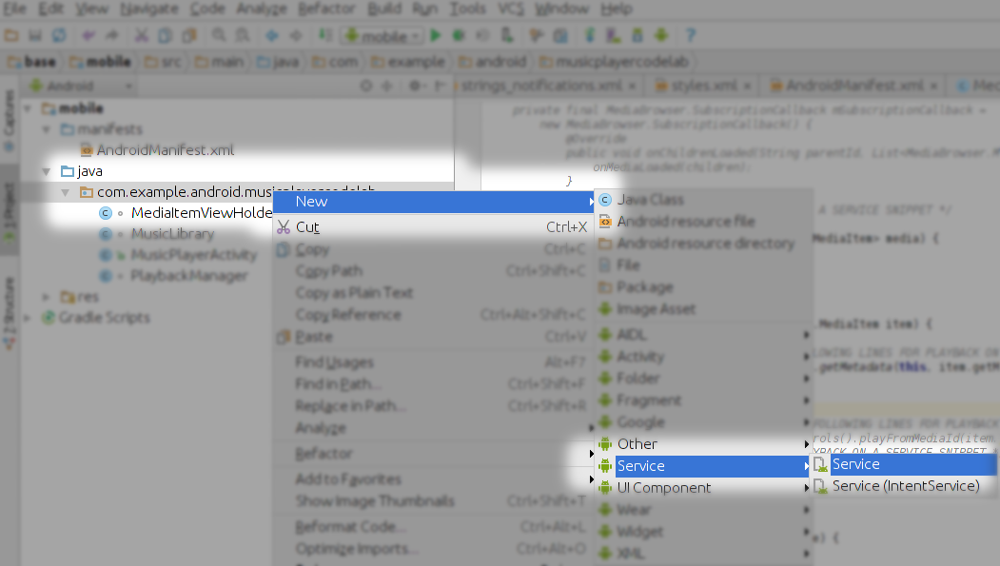
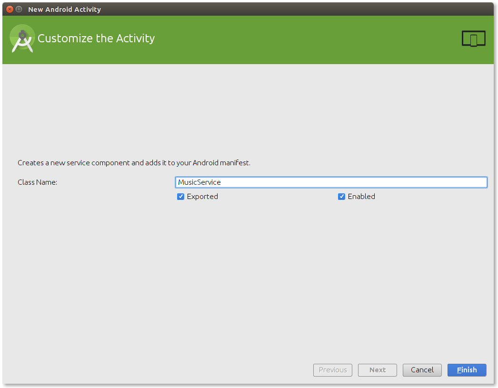
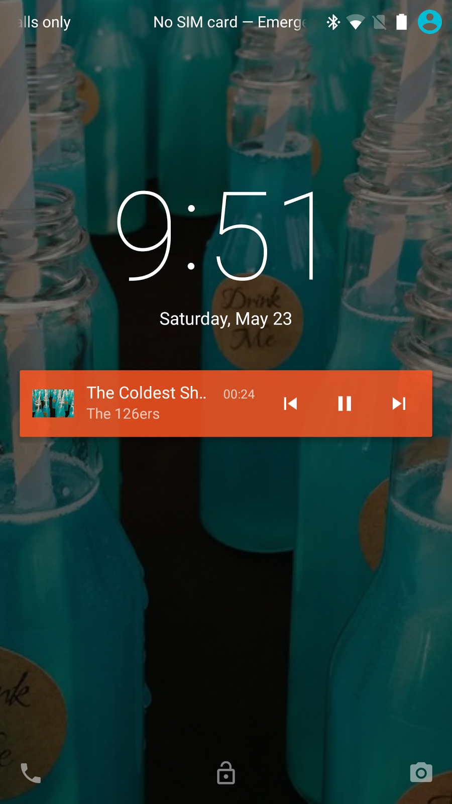
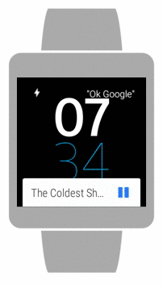
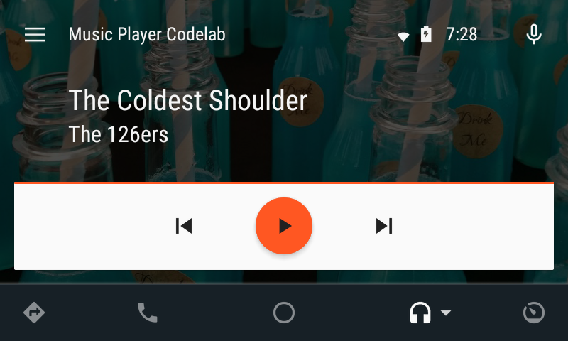
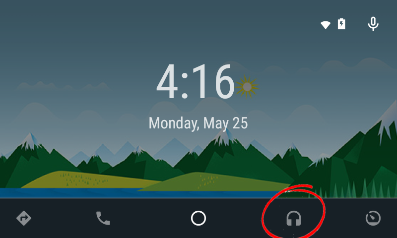
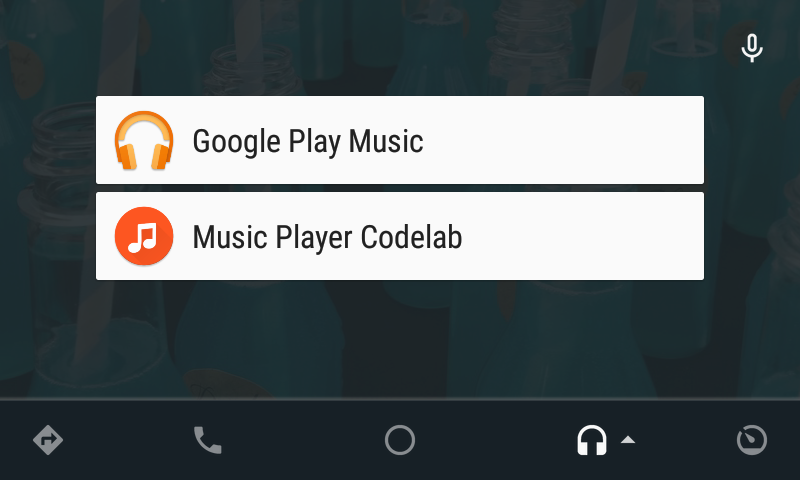

In this codelab, you’ll learn how to adapt a music player app to work seamlessly on Android Auto and Android Wear, using the latest Android media APIs.
What you’ll learn
Play music on a service
Use a MediaStyle notification to keep your service running in the background
Expose media and playback controls to external consumers, such as Android Auto and Android Wear
First, we will bootstrap with a very basic music player that plays predefined music in an activity. This is not the recommended way of playing music on Android. Let's try it to understand why.
Open Android Studo
Select the musicplayer-auto-wear/base directory from the code folder (File > Import Project… > musicplayer-auto-wear/base).
In general, a user expects that music keeps playing in the background while they do other things. To support background playing, we need to refactor our music player to play from a service, instead of doing it from an Activity as it is now.
In Android Lollipop, we introduced a special abstract service, the MediaBrowserService, that simplifies exposing media content and playback controls to consumers. These consumers can be different parts of the same application, or external consumers. By exporting a service that extends MediaBrowserService, you get (almost for) free compatibility with Android Auto and Android Wear. Let's see how to do it!
Create a MediaBrowserService
In Android Studio, right click on your project and select New -> Service -> Service

Fill the dialog with
Name: MusicService, Exported=true, Enabled=true

Replace the contents of the just created MusicService.java with the code below:
MusicService.java
package com.example.android.musicplayercodelab;
import android.media.MediaMetadata;
import android.media.browse.MediaBrowser.MediaItem;
import android.media.session.MediaSession;
import android.media.session.PlaybackState;
import android.os.Bundle;
import android.service.media.MediaBrowserService;
import java.util.List;
public class MusicService extends MediaBrowserService {
private MediaSession mSession;
private PlaybackManager mPlayback;
final MediaSession.Callback mCallback = new MediaSession.Callback() {
@Override
public void onPlayFromMediaId(String mediaId, Bundle extras) {
mSession.setActive(true);
MediaMetadata metadata = MusicLibrary.getMetadata(MusicService.this, mediaId);
mSession.setMetadata(metadata);
mPlayback.play(metadata);
}
@Override
public void onPlay() {
if (mPlayback.getCurrentMediaId() != null) {
onPlayFromMediaId(mPlayback.getCurrentMediaId(), null);
}
}
@Override
public void onPause() {
mPlayback.pause();
}
@Override
public void onStop() {
stopSelf();
}
@Override
public void onSkipToNext() {
onPlayFromMediaId(MusicLibrary.getNextSong(mPlayback.getCurrentMediaId()), null);
}
@Override
public void onSkipToPrevious() {
onPlayFromMediaId(MusicLibrary.getPreviousSong(mPlayback.getCurrentMediaId()), null);
}
};
@Override
public void onCreate() {
super.onCreate();
// Start a new MediaSession
mSession = new MediaSession(this, "MusicService");
mSession.setCallback(mCallback);
mSession.setFlags(MediaSession.FLAG_HANDLES_MEDIA_BUTTONS |
MediaSession.FLAG_HANDLES_TRANSPORT_CONTROLS);
setSessionToken(mSession.getSessionToken());
// ------------ CHANGE 7 - UNCOMMENT THE FOLLOWING LINE TO USE A NOTIFICATION
// final MediaNotificationManager mediaNotificationManager = new MediaNotificationManager(this);
// ------------ CHANGE 7 - END OF CHANGE
mPlayback = new PlaybackManager(this, new PlaybackManager.Callback() {
@Override
public void onPlaybackStatusChanged(PlaybackState state) {
mSession.setPlaybackState(state);
// ------------ CHANGE 8 - UNCOMMENT THE FOLLOWING LINE TO USE A NOTIFICATION
// mediaNotificationManager.update(mPlayback.getCurrentMedia(), state, getSessionToken());
// ------------ CHANGE 8 - END OF CHANGE
}
});
}
@Override
public void onDestroy() {
mPlayback.stop();
mSession.release();
}
@Override
public BrowserRoot onGetRoot(String clientPackageName, int clientUid, Bundle rootHints) {
return new BrowserRoot(MusicLibrary.getRoot(), null);
}
@Override
public void onLoadChildren(final String parentMediaId, final Result<List<MediaItem>> result) {
result.sendResult(MusicLibrary.getMediaItems());
}
}
Open AndroidManifest.xml and add an <intent-filter> with action "android.media.browse.MediaBrowserService" to the <service> tag associated with MusicService. Make sure it looks like this:
We now have a service that provides content and handles playback, but the activity is still playing on its own. We need to change the Activity to connect to the service instead.
Open MusicPlayerActivity
There are 6 places in this class with special comments, something like "---------- CHANGE 1". Locate these comments and follow the instructions in the source code: remove the lines right below the initial comment and uncomment the second block of code.
For example, if you have this:
// ------------ CHANGE 6 - REMOVE FOLLOWING LINES FOR PLAYBACK ON A SERVICE
mPlaybackManager.pause();
/* ------------ CHANGE 6 - UNCOMMENT FOLLOWING LINES FOR PLAYBACK ON A SERVICE
getMediaController().getTransportControls().pause();
// ------------ CHANGE 6 - END OF PLAYBACK ON A SERVICE SNIPPET */
after following the instructions, you should have this:
If necessary, fix the missing import statements (android.media.session.MediaController and android.content.ComponentName)
Now your activity is using the MediaBrowserService to play music. Run and test again.
Surprisingly, the music still eventually stops when you lock the phone screen or start doing something else. In the next section we will understand why.
Takeaways
Just running a service is not enough to get proper background playing. You also need to tell the system that the service should not be killed while playing.
If you want to expose playback controls (play, pause, skip, etc) to external components, like Android Auto and Android Wear, use a MediaSession (or MediaSessionCompat for pre-Lollipop versions)
If you want to expose your media content for browsing by external components, like Android Auto and Android Wear, use a MediaBrowserService
Just handling playback on a service is not enough to keep it running. The reason is that a normal service can be killed when no one is connected to it. We need to tell Android that this service needs to be kept up and running while the music is playing.
We do this by creating a notification linked to the service, in this case, a MediaStyle notification, which is a special kind of notification with a link to the MediaSession.
Create a new Java file called MediaNotificationManager in the same directory/package as the other classes:
Right click on the path module (com.example.android.musicplayercodelab) in the java folder
package com.example.android.musicplayercodelab;
import android.app.Notification;
import android.app.NotificationManager;
import android.app.PendingIntent;
import android.content.BroadcastReceiver;
import android.content.Context;
import android.content.Intent;
import android.content.IntentFilter;
import android.media.MediaDescription;
import android.media.MediaMetadata;
import android.media.session.MediaSession;
import android.media.session.PlaybackState;
/**
* Keeps track of a notification and updates it automatically for a given
* MediaSession. This is required so that the music service
* doesn't get killed during playback.
*/
public class MediaNotificationManager extends BroadcastReceiver {
private static final int NOTIFICATION_ID = 412;
private static final int REQUEST_CODE = 100;
private static final String ACTION_PAUSE = "com.example.android.musicplayercodelab.pause";
private static final String ACTION_PLAY = "com.example.android.musicplayercodelab.play";
private static final String ACTION_NEXT = "com.example.android.musicplayercodelab.next";
private static final String ACTION_PREV = "com.example.android.musicplayercodelab.prev";
private final MusicService mService;
private final NotificationManager mNotificationManager;
private final Notification.Action mPlayAction;
private final Notification.Action mPauseAction;
private final Notification.Action mNextAction;
private final Notification.Action mPrevAction;
private boolean mStarted;
public MediaNotificationManager(MusicService service) {
mService = service;
String pkg = mService.getPackageName();
PendingIntent playIntent = PendingIntent.getBroadcast(mService, REQUEST_CODE,
new Intent(ACTION_PLAY).setPackage(pkg), PendingIntent.FLAG_CANCEL_CURRENT);
PendingIntent pauseIntent = PendingIntent.getBroadcast(mService, REQUEST_CODE,
new Intent(ACTION_PAUSE).setPackage(pkg), PendingIntent.FLAG_CANCEL_CURRENT);
PendingIntent nextIntent = PendingIntent.getBroadcast(mService, REQUEST_CODE,
new Intent(ACTION_NEXT).setPackage(pkg), PendingIntent.FLAG_CANCEL_CURRENT);
PendingIntent prevIntent = PendingIntent.getBroadcast(mService, REQUEST_CODE,
new Intent(ACTION_PREV).setPackage(pkg), PendingIntent.FLAG_CANCEL_CURRENT);
mPlayAction = new Notification.Action(R.drawable.ic_play_arrow_white_24dp,
mService.getString(R.string.label_play), playIntent);
mPauseAction = new Notification.Action(R.drawable.ic_pause_white_24dp,
mService.getString(R.string.label_pause), pauseIntent);
mNextAction = new Notification.Action(R.drawable.ic_skip_next_white_24dp,
mService.getString(R.string.label_next), nextIntent);
mPrevAction = new Notification.Action(R.drawable.ic_skip_previous_white_24dp,
mService.getString(R.string.label_previous), prevIntent);
IntentFilter filter = new IntentFilter();
filter.addAction(ACTION_NEXT);
filter.addAction(ACTION_PAUSE);
filter.addAction(ACTION_PLAY);
filter.addAction(ACTION_PREV);
mService.registerReceiver(this, filter);
mNotificationManager = (NotificationManager) mService
.getSystemService(Context.NOTIFICATION_SERVICE);
// Cancel all notifications to handle the case where the Service was killed and
// restarted by the system.
mNotificationManager.cancelAll();
}
@Override
public void onReceive(Context context, Intent intent) {
final String action = intent.getAction();
switch (action) {
case ACTION_PAUSE:
mService.mCallback.onPause();
break;
case ACTION_PLAY:
mService.mCallback.onPlay();
break;
case ACTION_NEXT:
mService.mCallback.onSkipToNext();
break;
case ACTION_PREV:
mService.mCallback.onSkipToPrevious();
break;
}
}
public void update(MediaMetadata metadata, PlaybackState state, MediaSession.Token token) {
if (state == null || state.getState() == PlaybackState.STATE_STOPPED ||
state.getState() == PlaybackState.STATE_NONE) {
mService.stopForeground(true);
try {
mService.unregisterReceiver(this);
} catch (IllegalArgumentException ex) {
// ignore receiver not registered
}
mService.stopSelf();
return;
}
if (metadata == null) {
return;
}
boolean isPlaying = state.getState() == PlaybackState.STATE_PLAYING;
Notification.Builder notificationBuilder = new Notification.Builder(mService);
MediaDescription description = metadata.getDescription();
notificationBuilder
.setStyle(new Notification.MediaStyle()
.setMediaSession(token)
.setShowActionsInCompactView(0, 1, 2))
.setColor(mService.getApplication().getResources().getColor(R.color.notification_bg))
.setSmallIcon(R.drawable.ic_notification)
.setVisibility(Notification.VISIBILITY_PUBLIC)
.setContentIntent(createContentIntent())
.setContentTitle(description.getTitle())
.setContentText(description.getSubtitle())
.setLargeIcon(MusicLibrary.getAlbumBitmap(mService, description.getMediaId()))
.setOngoing(isPlaying)
.setWhen(isPlaying ? System.currentTimeMillis() - state.getPosition() : 0)
.setShowWhen(isPlaying)
.setUsesChronometer(isPlaying);
// If skip to next action is enabled
if ((state.getActions() & PlaybackState.ACTION_SKIP_TO_PREVIOUS) != 0) {
notificationBuilder.addAction(mPrevAction);
}
notificationBuilder.addAction(isPlaying ? mPauseAction : mPlayAction);
// If skip to prev action is enabled
if ((state.getActions() & PlaybackState.ACTION_SKIP_TO_NEXT) != 0) {
notificationBuilder.addAction(mNextAction);
}
Notification notification = notificationBuilder.build();
if (isPlaying && !mStarted) {
mService.startService(new Intent(mService.getApplicationContext(), MusicService.class));
mService.startForeground(NOTIFICATION_ID, notification);
mStarted = true;
} else {
if (!isPlaying) {
mService.stopForeground(false);
mStarted = false;
}
mNotificationManager.notify(NOTIFICATION_ID, notification);
}
}
private PendingIntent createContentIntent() {
Intent openUI = new Intent(mService, MusicPlayerActivity.class);
openUI.setFlags(Intent.FLAG_ACTIVITY_SINGLE_TOP);
return PendingIntent.getActivity(mService, REQUEST_CODE, openUI,
PendingIntent.FLAG_CANCEL_CURRENT);
}
}
In MusicService, there are two places with special comments (CHANGE 7 and CHANGE 8). Locate these two comments and follow the instructions in the source code: remove the lines right below the initial comment and uncomment the second block of code. For example, if you have this:
// ------------ CHANGE 7 - UNCOMMENT THE FOLLOWING LINE TO USE A NOTIFICATION
// final MediaNotificationManager mediaNotificationManager = new MediaNotificationManager(this);
// ------------ CHANGE 7 - END OF CHANGE
final MediaNotificationManager mediaNotificationManager = new MediaNotificationManager(this);
repeat it for both changes.
Run!
Repeat the same tests you did before: start playing, do something else, open another application, lock the screen. The music continues to play in the background.
Also, because you've used a MediaStyle notification, the album art of the current song should be set as the background of the lock screen:

Takeaways
Use a notification to keep your service running in the background while playing
Use a MediaStyle notification to associate the MediaSession to the notification
Look at a paired Android Wear watch while a song is playing. You should see a special media notification that allows you to control playback and browse media content.

There is not a single line of Wear specific code. Android Wear automatically connects to the MediaSession linked by a MediaStyle notification. The latest version of Android Wear also connects to the MediaBrowserService for browsing content.
Takeaways
If you use the media APIs, your user will be able to control playback and browse songs on their Android Wear devices without any extra code.

Adapting your codelab music player to run on Android Auto is very simple. Android Auto, like Android Wear, relies on the standard MediaBrowserService and MediaSession APIs. The only additional requirement is to declare in your manifest that your app is compatible with Android Auto:
Create a new file "res/xml/automotive_app_desc.xml":
Right click in the "res" folder and select File -> New -> Android Resource File
Then fill the dialog with the following info:
File name: automotive_app_desc Resource type: XML Root element: automotiveApp
Replace the content of the file you just created with:
Now your music player is ready to work on Android Auto! Deploy the modified app to your phone, disconnect it from your computer and connect the phone via USB to the Android Auto head unit.
Click twice on the the Music (headphones) icon:

Select your app ("Music Player Codelab") from the list and have fun with it!

Takeaways
If you use the Android Lollipop media APIs, you get your app running on Android Auto just by declaring the proper meta-data.
Your music player now plays media on a service and allows for media browsing and playback controls on Android Wear and Android Auto with minimal effort. Using the Android Lollipop media APIs enables your app to seamlessly play music where your user wants, with minimal development and maintenance effort from you.
What we've covered
Moving music playback into a service.
Browsing and playing on Android Wear.
Browsing and playing on Android Auto.
Next Steps
This codelab ends here, but if you want to add more features, you can try to:
Support voice searches, like "Listen to MyFavoriteBand", which will allow your app to respond to voice commands on Android Auto, Android Wear and Google Now
Also, take a look at our open source reference music player, the Universal Music Player, which shows how to handle many issues you will encounter when creating a multi-form factor music player on Android.

 Run button (or press shift+F10).
Run button (or press shift+F10).